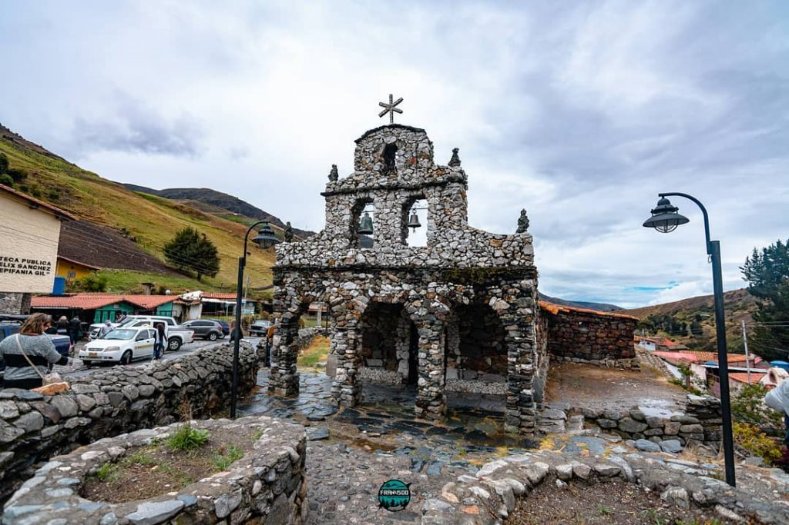

Lugar de interes en los paramos
Juan Pablo blondell

SITIOS DE INTERES
Unos de los sitios que se pueden visitar en el páramo es capilla de piedra de san Rafael, la cual se caracteriza por estar hecha solo a base de piedras esta se encuentra en el estado Mérida en el páramo de Mucuchies
Bibliografia